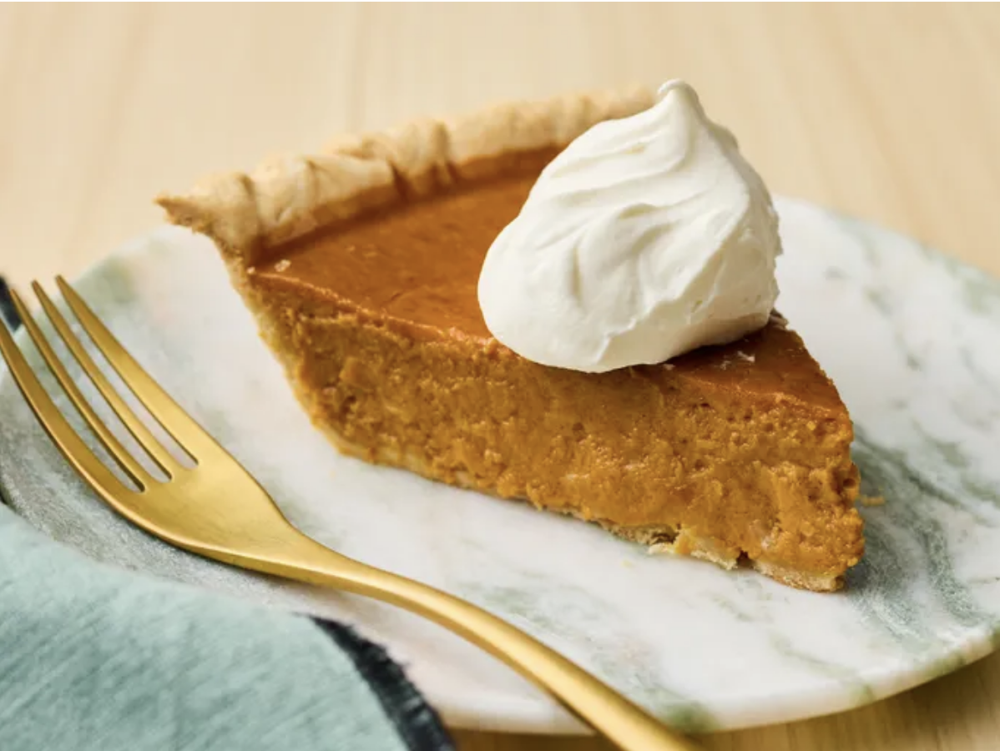

Home
Pumpkin Pie

Description
Libby's pumpkin pie is synonymous with the holiday season. The famous recipe, which the iconic brand made famous almost 100 years ago, is a tradition in homes around the country — once you try it, you'll understand why Libby's pumpkin pie recipe is so beloved.
Ingredients
- Pie crust
- Sugar
- Spices
- Salt
- Eggs
- Pumpkin
- Evaporated milk
Steps
- Gather the ingredients. Preheat the oven to 425 degrees F (220 degrees C).
- Combine sugar, cinnamon, salt, ginger, and cloves in small bowl.
- Beat eggs lightly in large bowl.
- Stir in pumpkin and sugar-spice mixture.
- Gradually stir in evaporated milk. Pour into pie shell.
- Bake in the preheated oven for 15 minutes. Reduce temperature to 350 degrees F (175 degrees C) and continue to bake until a knife inserted near the center comes out clean, 40 to 50 more minutes. Remove from the oven and set on a wire rack to cool to room temperature.
- Serve cooled pie immediately or refrigerate until ready to serve. (Do not freeze as this will cause the crust to separate from the filling.)